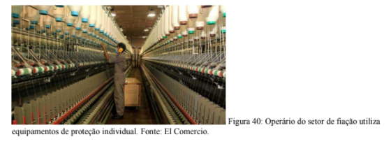
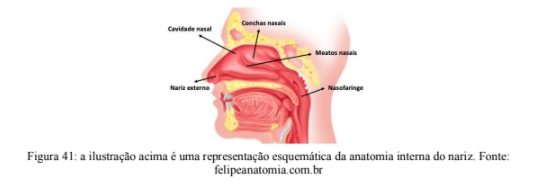
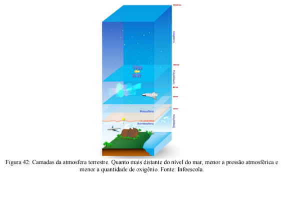
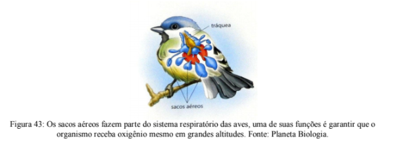
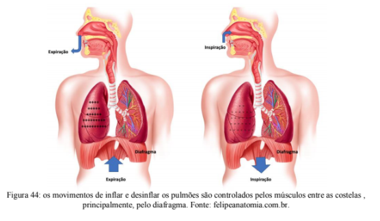
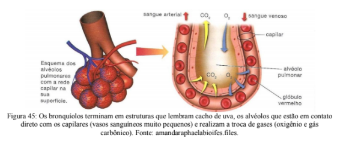
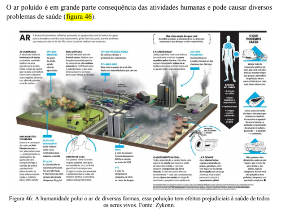
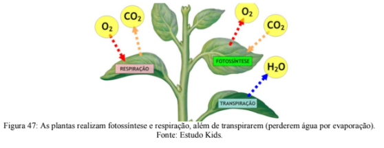
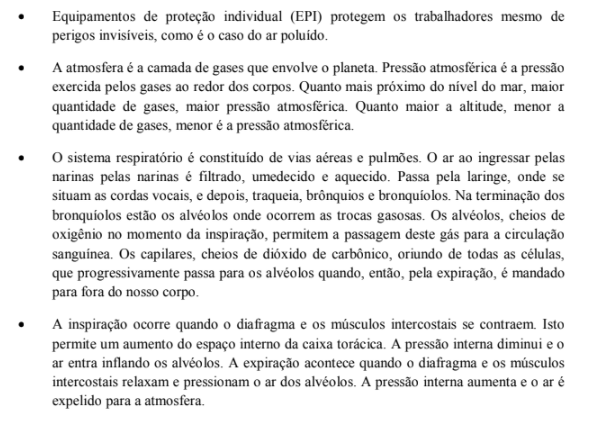
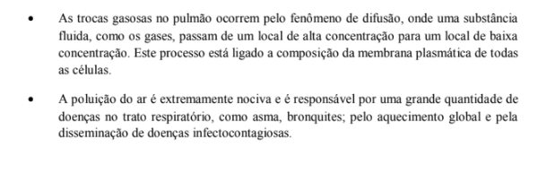

Capítulo 4
INDÚSTRIA TÊXTIL, EPI E RESPIRAÇÃO
QuestãoO uso de equipamentos de proteção individual (EPI) é crucial para manter a saúde do trabalhador mesmo de perigos que não podemos ver. A imagem abaixo (figura 40) nos apresenta o setor de fiação de uma indústria têxtil. É fácil deduzir o motivo pelo qual o trabalhador utiliza abafadores de som, mas por que ele está utilizando uma máscara de proteção?
Contextualizando
Apesar de não enxergarmos, o ar que respiramos é composto por diversas partículas, algumas muito pequenas, outras nem tanto. A indústria têxtil é considerada uma das 10 profissões mais perigosas para o sistema respiratório. O processamento de fibras como algodão e linho libera no ambiente partículas que ficam suspensas no ar e não são totalmente capturadas pelos sistemas de filtragem do maquinário. Por que isso é um problema?
Para nos proteger o ar passa por vários filtros antes de chegar aos nossos pulmões. Além dos pelos presentes no nariz externo, a cavidade nasal é repleta de dobras (meatos e conchas nasais) recobertas por muco (figura 41). O muco é uma substância pegajosa que captura partículas maiores presentes no ar. Essas partículas podem ser poeira ou até mesmo microrganismos.
Quando existem muitas partículas dispersas no ar é impossível que esse sistema de filtragem funcione perfeitamente, a chegada dessas partículas no restante do sistema respiratório pode comprometer a saúde. Se esse contato com elementos estranhos acontece frequentemente é possível desenvolver uma série de doenças graves como câncer ou enfisema. O uso de máscara em ambientes com muitas partículas no ar é essencial para a proteção no sistema respiratório.
(RE)CONSTRUINDO CONHECIMENTOSA atmosfera é a camada de gases que envolve a Terra. Quanto mais próximo do nível do mar, maior é a quantidade de gases, portanto, maior é a pressão que o ar exerce sobre os corpos. Este fenômeno é conhecido como pressão atmosférica. Quanto maior a altitude, menor é a quantidade de gases, menor é a pressão atmosférica. É possível sentir isso no corpo quando subimos uma serra, o ar dentro das nossas cavidades pressiona a membrana timpânica do ouvido. Assim, temos a sensação de entupimento. Aos poucos, o nosso corpo vai se acostumando e os ouvidos desentopem. Quando fazemos o caminho de volta, na descida da serra, a pressão do ar começa a aumentar e, novamente, sentimos os ouvidos entupindo. Basta dar um bocejo e tudo volta ao normal.
O ar da atmosfera é composto do gás nitrogênio (78%), gás oxigênio (21%), gás carbônico (0,04%), gases nobres e outros (2%). A 30.000 metros de altitude encontramos a camada de ozônio (O3), responsável pela proteção do planeta contra as radiações solares (figura 42). Sem esta camada, seria quase impossível existir a diversidade de vida que temos no planeta, pois os raios solares, como os raios ultravioletas A e B, são extremamente mortais.
A diferença de pressão atmosférica acontece porque a força da gravidade atrai as partículas e gases da atmosfera, logo a concentração de gases é maior perto do nível do mar e, consequentemente a pressão atmosférica também é maior. A maior concentração de elementos na atmosfera tem outra consequência: o calor é transferido com maior facilidade, logo, a temperatura próximo ao nível do mar também é maior. Quanto maior a altitude, menor o número de partículas na atmosfera e menor a temperatura.
Essa mudança de concentração dos gases da atmosfera de acordo com a altitude afeta a respiração dos seres vivos, já que a quantidade de oxigênio também diminui. Aves, por exemplo, tem um sistema de sacos aéreos (figura 43) que aumenta a eficiência da respiração em grandes altitudes (durante o voo essa adaptação é essencial).
SISTEMA RESPIRATÓRIO
O aparelho respiratório humano é constituído basicamente por duas partes: as vias aéreas e os pulmões.
Considerando-se o percurso da entrada do ar, a primeira estrutura do aparelho respiratório são as narinas. Estas são simples aberturas que dão acesso às fossas nasais. As fossas nasais são os canais internos do nariz, que aprofundam-se no crânio e abrem-se na região posterior da cavidade bucal. Dentre as suas funções estão a filtragem do ar, feita por pelos e por muco das paredes; a umidificação do ar, pois muitas vezes ele entra muito seco; e o aquecimento do ar, uma vez que, entrando a baixas temperaturas, provocaria um choque térmico e isto é evitado pela enorme rede de vasos sanguíneos na região atrás do nariz.
A ventilação nos pulmões é obtida através dos movimentos de inspiração e expiração (figura 44). Participam desses movimentos a musculatura torácica intercostal (entre as costela) e o diafragma. O diafragma é um músculo que separa o tórax do abdome e é encontrado unicamente em mamíferos.
A inspiração é provocada pela contração do diafragma e dos músculos intercostais. Com a contração do diafragma, a base da cavidade torácica é rebaixada, ao mesmo tempo em que ocorre a expansão das costelas devido à contração dos músculos intercostais. Considerando- se que a pressão no interior dos pulmões seja, teoricamente, igual a pressão externa (atmosférica), o aumento volumétrico do tórax causado pelos movimentos já citados, provoca uma queda da pressão interna. Com isso, por uma simples questão de diferença de pressão, o ar penetra no aparelho respiratório em direção aos pulmões. É a inspiração. De maneira inversa, o relaxamento da musculatura diminui o volume da cavidade torácica, impulsionando o ar, através das vias respiratórias, para o exterior. É a expiração.
TRANSPORTE ATRAVÉS DA MEMBRANA
Chama-se difusão o fenômeno físico de dispersão dos componentes de uma substância fluida, de um local de alta concentração para um local de baixa concentração, até que os componentes se mantenham em quantidades iguais.
A membrana plasmática das células apresenta dois componentes principais: uma bicamada lipídica e uma grande quantidade de proteínas mergulhadas nessa matriz lipídica. Várias destas proteínas são canais por onde as substâncias atravessam. A parte lipídica permite que substâncias de constituição apolar, tais como os gases oxigênio e carbônico, possam transpor a membrana. Este tipo de transporte é chamado de difusão simples. Já a parte proteica, a dos canais, permite a passagem de substâncias polares ou compostos dotados de cargas, como os íons. Este transporte é conhecido como difusão facilitada.
PARA SABER MAIS...
O sangue que passa pelos capilares dos alvéolos é oxigenado e segue para o resto do corpo, estando disponível para entrar nas células e participar da respiração celular aeróbica (como vimos no capítulo anterior).
VOCÊ SABIA?
As plantas também respiram. Estamos acostumados a pensar apenas no processo de fotossíntese das plantas e esquecemos que elas também precisam transformar a energia das moléculas de açúcar em moléculas de ATP! A respiração das plantas acontece seguindo a respiração celular aeróbica onde açúcar, água e oxigênio são convertidos em ATP (adenosina trifosfato) e há a liberação de gás carbônico (figura 47).
AÇÃO E REFLEXÃO
Leia o texto abaixo
A Amazônia não é o pulmão do mundo
Quem merece esse título são as algas marinhas, mas isso não quer dizer que destruir a floresta não traria nenhuma consequência.
Defender a Amazônia é uma necessidade. Mas nada justifica mentira e desinformação. A Amazônia não produz 20% do oxigênio do mundo. O fato é que todas as selvas e bosques do planeta, juntos, produzem 24%. E tem um detalhe: a floresta consome praticamente tudo. Logo, essa história de “pulmão do mundo” não confere.
Na verdade, são as algas marinhas que fazem a maior parte desse trabalho – elas jogam na atmosfera quase 55% de todo o oxigênio produzido no planeta. E mais: florestas como a Amazônia, segundo os cientistas, são ambientes em clímax ecológico. Isso quer dizer que elas consomem todo – ou quase todo – o oxigênio que produzem.
Você sabia que uma árvore adulta consome, através da respiração, praticamente a mesma quantidade de oxigênio que ela produz durante a fotossíntese? Quanto maior o corpo, maior o consumo de oxigênio. É por isso que as algas (principalmente aquelas que têm o corpo formado por apenas uma célula) produzem a maior parte do oxigênio acumulado na atmosfera.
Você consegue responder por que, mesmo assim, preservar as florestas é essencial para manter a qualidade de vida no planeta?
Assista ao vídeo abaixo e pense: como isso se relaciona com a questão apresentada no início deste capítulo?
O QUE APRENDI
